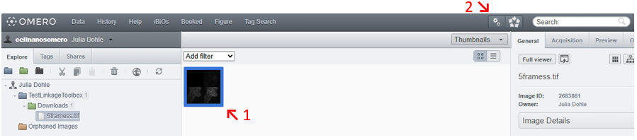

omero_LinkageToolbox: Linking with OMERO via drag and drop
To link your ELN object with OMERO, simply drag and drop or paste the URL of your ELN object onto the selected elements in OMERO (such as Datasets or Images). This action prompts OMERO to send a *.eln file containing the metadata of all associated images to your ELN, creating a new ELN entry linked to your chosen ELN object.
To incorporate data bridging into your infrastructure, please follow the steps outlined below.
Supported ELN platforms
openBIS version >=20.10.8
Prerequisites
Check your Python installation on omero-server:
Python version >=3.9;
make sure the following Python modules are installed on your omero-server:
omero-py (tested with v5.19.5) rocrate (tested with v0.11.0)
Installation
Definitions:
$ELN_INSTANCE_DIRis the path on the e.g. eln-server where your eln is installed (e.g. /home/openbis/openbis/).$ELN_SHAREis the watch folder on your eln-server (e.g. /home/openbis/dataBridge_omero)
The omero_LinkageToolbox allows you to combine your OMERO instance with any of the supported ELN platforms. Follow the steps for both OMERO and your chosen ELN platform
Steps for OMERO:
Mount ELN share
$ELN_SHAREas$DROPBOX_MNTDownload the ELN_Writer.py script and edit its configuration section:
# the output path for building the .eln file OUTPUT_PATH = "/tmp" # the ELN Share receiving the .eln files ELN_SHARE = §DROPBOX_MNT # the url of your ELN instance ELN_URI = "https://myELN.de" # the url of your OMERO instance OMERO_URI = "https://omero.institute.de"
Upload the script
ELN_Writer.pyto your omero instance (see the “HowTo upload a server-side script in OMERO” guide) in order to run it as a server-side script.On
omero-servercheck if all Python modules listed in required modules are installed
Steps for openBIS:
To create a dropbox, navigate first to
$ELN_INSTANCE_DIR/servers/core-pluginsand create a directory structure for your dropbox (for example, creating the directory structure dataBridge/1/dss/drop-boxes/omero-dropbox)cd $ELN_INSTANCE_DIR/servers/core-plugins/ mkdir -p dataBridge/1/dss/drop-boxes/omero-dropbox
Copy omero-receiver.py to the
omero-dropboxfolder and specifyEMAIL_FROMandEMAIL_TOto send a notification mail to the dropbox administrator if any issues arise during operation.In the
omero-dropboxdirectory, create and configure theplugin.propertiesfile (see plugin.properties for details)Add your core-plugin (e.g. dataBridge) to the list of
enabled-modulesin$ELN_INSTANCE_DIR/servers/core-plugins/core-plugins.propertiesDon’t forget to create the watch folder
$ELN_SHAREon your openBIS-servercd /home/openbis/ mkdir dataBridge_omero
Configure
$ELN_SHAREas SHARE and grant omero-server write access to that folderRestart DSS server
After the restart the dropbox should be listed in the eln-lims GUI under
Dropbox Monitor.
Usage
Click on /select the dataset or images you want to link with the omero_LinkageToolbox.
Click on OMEROs script button and choose the script ELN_writer.

The ELN_writer will open in a new window. If pre-chosen, the dataset or image IDs and their data type are already written to the “IDs” and “Data Type” field. Otherwise type in all IDs you want to link and select the corresponding data type. If you choose Dataset: Pay attention to the ELN link option, which defines if you want a link to the ELN experiment on all images in the dataset or solely on the dataset itself. Choose which metadata to include in the linkage. Don´t forget to paste or drag and drop the ELN url! Finally “Run script”.
If your ELN is openBIS:
An entry with the name „OMERO data“ will be created and linked to your pasted /drag&drop object.
Results in preview mode: